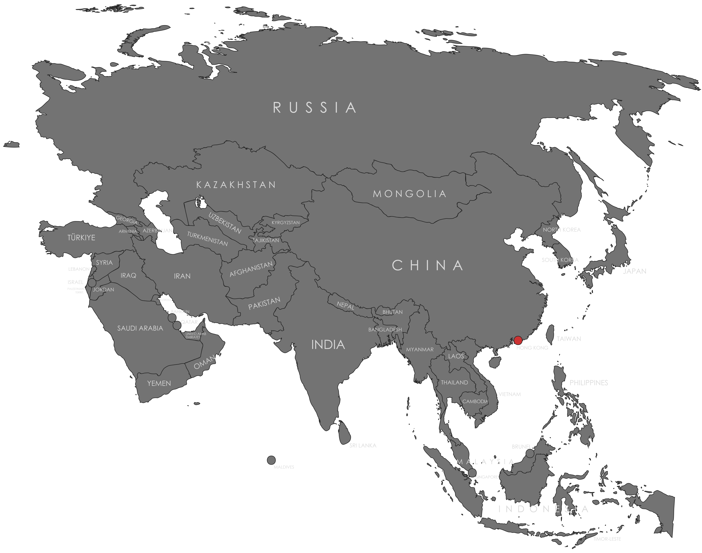

Specifications
- Local Name: 香港 (Xiānggǎng / Heung Gong)
- Proportion: 2:3
- Name of the Flag: Regional Flag of the Hong Kong Special Administrative Region
- Adopted: July 1, 1997
Symbolism
- Red field: Celebration, vibrancy, connection with China
- White Bauhinia flower: Harmony and uniqueness
- Five-petal Bauhinia blakeana flower at the center
- Each petal contains a red five-pointed star
- Curved design symbolizes dynamism and balance
Colors:
Shapes / Symbols:
Meaning / Special Display
- Used as the official regional flag under the “One Country, Two Systems” framework.
- Displayed during regional government events, cultural celebrations, and international representation by Hong Kong teams.
- Must always be shown alongside the national flag of China, with China’s flag in the position of honor.
Description
- The flag represents Hong Kong’s identity as a vibrant, multicultural city while symbolizing its connection to China.
- For its people, it reflects values of harmony, resilience, and regional pride.

Return to Gallery